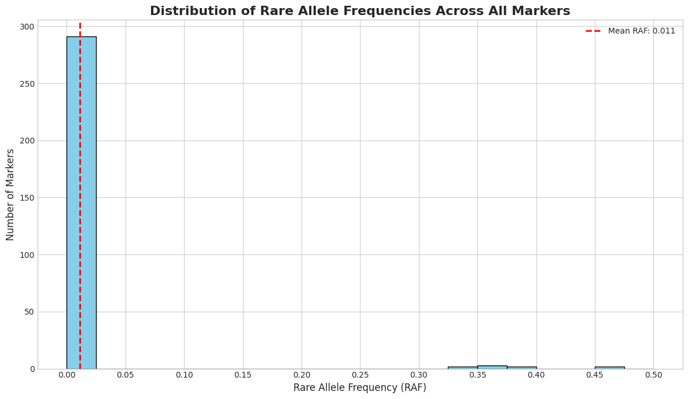

If you are new to using nbdev here are some useful pointers to get you started.
Install chewc in Development mode
# make sure chewc package is installed in development mode$ pip install -e .# make changes under nbs/ directory# ...# compile to have changes apply to chewc$ nbdev_prepare
Documentation can be found hosted on this GitHub repository’s pages.
How to use
import jaximport jax.numpy as jnpimport time# --- 1. JAX Setup ---key = jax.random.PRNGKey(42)# --- 2. Imports from the 'chewc' library ---from chewc.sp import SimParamfrom chewc.population import Population, quick_haplofrom chewc.trait import add_trait_afrom chewc.burnin import run_burnin# Import the generation runnerfrom chewc.pipe import run_generation # --- 3. Define Genome Blueprint ---n_chr, n_loci_per_chr, ploidy =3, 100, 2gen_map = jnp.array([jnp.linspace(0, 1, n_loci_per_chr) for _ inrange(n_chr)])centromeres = jnp.full(n_chr, 0.5)# --- 4. Define Trait Architecture ---trait_mean =0.0trait_var =1.0trait_h2 =0.05# --- 5. Define Burn-in Parameters ---n_parents_select =6n_progeny =20burn_in_generations =50# --- 6. Instantiate SimParam ---sp = SimParam(gen_map=gen_map, centromere=centromeres, ploidy=ploidy)# --- 7. Create Founder Population ---key, pop_key = jax.random.split(key)founder_pop = quick_haplo(key=pop_key, sim_param=sp, n_ind=10, inbred=False)sp = sp.replace(founderPop=founder_pop)# --- 8. Add Trait to SimParam ---key, trait_key = jax.random.split(key)sp = add_trait_a( key=trait_key, sim_param=sp, n_qtl_per_chr=100, mean=jnp.array([trait_mean]), var=jnp.array([trait_var]))# --- 9. Run the entire Burn-in Phase with a single function call ---key, burnin_key = jax.random.split(key)h2 = jnp.array([trait_h2])start_time = time.time()final_pop = run_burnin( key=burnin_key, sp=sp, n_generations=burn_in_generations, n_parents=n_parents_select, n_progeny=n_progeny, h2=h2, verbose=True)final_pop.geno.block_until_ready()end_time = time.time()# --- 10. Report Results ---total_time = end_time - start_timeavg_time_per_gen = total_time / burn_in_generationsprint("-"*50)print(f"Total simulation time for burn-in: {total_time:.4f} seconds.")print(f"Average time per generation (including compilation): {avg_time_per_gen *1000:.4f} ms")print(f"\nFinal population state after {burn_in_generations} generations:")print(final_pop)# --- 11. Create a new generation from the final population ---print("\n"+"-"*50)print("Running one more generation with all parents...")# Create a new key for the next generationkey, next_gen_key = jax.random.split(key)# All individuals in `final_pop` will be parentsn_all_parents = final_pop.nInd n_new_progeny =2000# Run a single generationexpanded_pop = run_generation( key=next_gen_key, pop=final_pop, h2=h2, n_parents=n_all_parents, n_crosses=n_new_progeny, use_pheno_selection=True, # Selection strategy doesn't matter here select_top_parents=True, # since we use all parents. ploidy=sp.ploidy, gen_map=sp.gen_map, recomb_param_v=sp.recomb_params[0], traits=sp.traits)expanded_pop.geno.block_until_ready()print(f"\nCreated new expanded population of {n_new_progeny} individuals:")print(expanded_pop)
WARNING:2025-08-12 01:33:46,700:jax._src.xla_bridge:794: An NVIDIA GPU may be present on this machine, but a CUDA-enabled jaxlib is not installed. Falling back to cpu.
--- Starting Accelerated Burn-in (50 Generations) ---
Generation 1/50 | Mean Phenotype: 0.4809
Generation 2/50 | Mean Phenotype: 0.2831
Generation 3/50 | Mean Phenotype: 0.9954
Generation 4/50 | Mean Phenotype: 1.6294
Generation 5/50 | Mean Phenotype: 0.7427
Generation 6/50 | Mean Phenotype: 0.3273
Generation 7/50 | Mean Phenotype: 1.8350
Generation 8/50 | Mean Phenotype: 1.5327
Generation 9/50 | Mean Phenotype: 1.9929
Generation 10/50 | Mean Phenotype: 1.4055
Generation 11/50 | Mean Phenotype: 1.5754
Generation 12/50 | Mean Phenotype: 1.1933
Generation 13/50 | Mean Phenotype: 2.1454
Generation 14/50 | Mean Phenotype: 2.0374
Generation 15/50 | Mean Phenotype: 2.5389
Generation 16/50 | Mean Phenotype: 2.5578
Generation 17/50 | Mean Phenotype: 2.8936
Generation 18/50 | Mean Phenotype: 2.2968
Generation 19/50 | Mean Phenotype: 2.1544
Generation 20/50 | Mean Phenotype: 2.1854
Generation 21/50 | Mean Phenotype: 2.7047
Generation 22/50 | Mean Phenotype: 2.3329
Generation 23/50 | Mean Phenotype: 2.5332
Generation 24/50 | Mean Phenotype: 2.5555
Generation 25/50 | Mean Phenotype: 2.6047
Generation 26/50 | Mean Phenotype: 2.7655
Generation 27/50 | Mean Phenotype: 2.5083
Generation 28/50 | Mean Phenotype: 2.3862
Generation 29/50 | Mean Phenotype: 2.5721
Generation 30/50 | Mean Phenotype: 2.5250
Generation 31/50 | Mean Phenotype: 2.5025
Generation 32/50 | Mean Phenotype: 2.7499
Generation 33/50 | Mean Phenotype: 2.8526
Generation 34/50 | Mean Phenotype: 2.8913
Generation 35/50 | Mean Phenotype: 3.0311
Generation 36/50 | Mean Phenotype: 2.8250
Generation 37/50 | Mean Phenotype: 2.9085
Generation 38/50 | Mean Phenotype: 2.9671
Generation 39/50 | Mean Phenotype: 2.9373
Generation 40/50 | Mean Phenotype: 2.9692
Generation 41/50 | Mean Phenotype: 2.9876
Generation 42/50 | Mean Phenotype: 2.9616
Generation 43/50 | Mean Phenotype: 3.1559
Generation 44/50 | Mean Phenotype: 2.9077
Generation 45/50 | Mean Phenotype: 2.7710
Generation 46/50 | Mean Phenotype: 2.7961
Generation 47/50 | Mean Phenotype: 2.8012
Generation 48/50 | Mean Phenotype: 2.8027
Generation 49/50 | Mean Phenotype: 2.8539
Generation 50/50 | Mean Phenotype: 2.9903
--- Burn-in Complete ---
--------------------------------------------------
Total simulation time for burn-in: 10.0615 seconds.
Average time per generation (including compilation): 201.2293 ms
Final population state after 50 generations:
Population(nInd=20, nTraits=1, has_ebv=No)
--------------------------------------------------
Running one more generation with all parents...
Created new expanded population of 2000 individuals:
Population(nInd=2000, nTraits=1, has_ebv=No)
import matplotlib.pyplot as pltplt.hist(expanded_pop.pheno)
import jax.numpy as jnpimport jax.random as randomimport matplotlib.pyplot as pltimport numpy as np# 1. Simulate your data array# This creates a random array with the specified dimensions to demonstrate the logic.# Shape: (individuals, chromosomes, haplotypes, markers)key = random.PRNGKey(42)def calculate_rare_allele_frequency(data):""" Calculates the proportion of the rare allele for each marker per chromosome. Args: data: A jnp.ndarray with shape (individuals, chromosomes, haplotypes, markers). Returns: A jnp.ndarray with shape (chromosomes, markers) containing the rare allele proportions. """# Total alleles per marker = number of individuals * number of haplotypes total_alleles = data.shape[0] * data.shape[2] # 100 * 2 = 200# Sum over the 'individuals' (axis 0) and 'haplotypes' (axis 2) dimensions. allele_1_counts = data.sum(axis=(0, 2))# Calculate the frequency (proportion) of allele '1'. p = allele_1_counts / total_alleles# The rare allele is the one with a frequency < 0.5. rare_allele_proportions = jnp.minimum(p, 1- p)return rare_allele_proportions# Get the (3, 100) summary arrayrare_allele_summary = calculate_rare_allele_frequency(final_pop.geno)# --- 2. Visualize the Frequencies as a Histogram ---# Flatten the (3, 100) array into a 1D array of 300 values# Convert to a standard NumPy array for plottingfrequencies_flat = np.array(rare_allele_summary.flatten())# Create the histogramplt.style.use('seaborn-v0_8-whitegrid') # Use a nice style for the plotfig, ax = plt.subplots(figsize=(12, 7))# Plot the histogram with 20 bins for good resolution# The range is [0, 0.5] since these are rare allele frequenciesax.hist(frequencies_flat, bins=20, range=(0, 0.5), color='skyblue', edgecolor='black')# Set titles and labels for clarityax.set_title('Distribution of Rare Allele Frequencies Across All Markers', fontsize=16, fontweight='bold')ax.set_xlabel('Rare Allele Frequency (RAF)', fontsize=12)ax.set_ylabel('Number of Markers', fontsize=12)# Set x-axis ticks for better readabilityax.set_xticks(np.arange(0, 0.51, 0.05))# Add a vertical line at the mean RAFmean_raf = frequencies_flat.mean()ax.axvline(mean_raf, color='red', linestyle='--', linewidth=2, label=f'Mean RAF: {mean_raf:.3f}')ax.legend()# Display the plotplt.tight_layout()plt.show()# --- Verification ---print(f"Shape of the summary array: {rare_allele_summary.shape}")print(f"Shape of the flattened array for plotting: {frequencies_flat.shape}")print(f"Mean Rare Allele Frequency: {mean_raf}")print(f"Min Frequency: {frequencies_flat.min()}")print(f"Max Frequency: {frequencies_flat.max()}")# 3. Get the final resultrare_allele_summary = calculate_rare_allele_frequency(expanded_pop.geno)# --- Verification ---print(f"Shape of the input data: {expanded_pop.geno.shape}")print(f"Shape of the final summary array: {rare_allele_summary.shape}")print("\nExample: Proportions for the first 5 markers on the first chromosome:")print(rare_allele_summary[1, :100])

Shape of the summary array: (3, 100)
Shape of the flattened array for plotting: (300,)
Mean Rare Allele Frequency: 0.011166666634380817
Min Frequency: 0.0
Max Frequency: 0.44999998807907104
Shape of the input data: (2000, 3, 2, 100)
Shape of the final summary array: (3, 100)
Example: Proportions for the first 5 markers on the first chromosome:
[0. 0. 0. 0. 0. 0. 0. 0. 0. 0. 0. 0. 0. 0. 0. 0. 0. 0. 0. 0. 0. 0. 0. 0.
0. 0. 0. 0. 0. 0. 0. 0. 0. 0. 0. 0. 0. 0. 0. 0. 0. 0. 0. 0. 0. 0. 0. 0.
0. 0. 0. 0. 0. 0. 0. 0. 0. 0. 0. 0. 0. 0. 0. 0. 0. 0. 0. 0. 0. 0. 0. 0.
0. 0. 0. 0. 0. 0. 0. 0. 0. 0. 0. 0. 0. 0. 0. 0. 0. 0. 0. 0. 0. 0. 0. 0.
0. 0. 0. 0.]
import gymnasium as gymfrom gymnasium import spacesimport jaximport jax.numpy as jnpimport numpy as npfrom typing import Dict, Any, Optional, Tuple# --- Imports from your codebase ---# These are assumed to be in an installable package named 'chewc'from chewc.population import Population, quick_haplofrom chewc.sp import SimParamfrom chewc.trait import add_trait_afrom chewc.phenotype import set_phenofrom chewc.cross import _make_cross_geno # We need the JIT-compiled core functionclass BreedingEnv(gym.Env):""" A Gymnasium environment for a simulated breeding program. The agent's goal is to maximize the genetic merit of a population over a series of generations by selecting the best parents. **Observation Space:** A dictionary containing the phenotypic and true breeding values of the current population. - `phenotypes`: Box(shape=(pop_size, n_traits)) - `breeding_values`: Box(shape=(pop_size, n_traits)) **Action Space:** A `MultiDiscrete` space where the agent selects a fixed number of individuals from the current population to be parents. The action is an array of integer indices. - `MultiDiscrete([pop_size] * n_parents_to_select)` **Reward:** The reward at each step is the change in the mean breeding value of the population from the previous generation to the current one. This directly incentivizes genetic gain. **Termination/Truncation:** - The episode is `truncated` after a maximum number of generations is reached. - The episode is `terminated` if the genetic variance of the population drops below a threshold, indicating that no further progress can be made. """ metadata = {"render_modes": ["human"], "render_fps": 4}def__init__(self, env_config: Dict[str, Any]):""" Initializes the breeding environment. Args: env_config (Dict[str, Any]): A dictionary containing configuration parameters for the simulation. Expected keys are: - `pop_size`: The number of individuals in the population each generation. - `n_parents_to_select`: The number of parents the agent must select. - `n_traits`: The number of traits to simulate. - `n_chr`: The number of chromosomes. - `n_loci_per_chr`: The number of loci on each chromosome. - `ploidy`: The ploidy of the individuals (e.g., 2 for diploid). - `trait_mean`: The target mean for the trait(s). - `trait_var`: The target variance for the trait(s). - `h2`: The narrow-sense heritability of the trait(s). - `max_generations`: The maximum number of generations per episode. - `termination_var_threshold`: Genetic variance level to terminate episode. """super().__init__()self.config = env_configself.state: Dict[str, Any] = {}# --- Define Observation and Action Spaces --- pop_size =self.config['pop_size'] n_traits =self.config['n_traits'] n_parents =self.config['n_parents_to_select']self.observation_space = spaces.Dict({"phenotypes": spaces.Box(low=-np.inf, high=np.inf, shape=(pop_size, n_traits), dtype=np.float32),"breeding_values": spaces.Box(low=-np.inf, high=np.inf, shape=(pop_size, n_traits), dtype=np.float32) })# The action is to select `n_parents` individuals from the population of `pop_size`self.action_space = spaces.MultiDiscrete(np.full(n_parents, pop_size))def _get_obs(self) -> Dict[str, np.ndarray]:"""Constructs the observation dictionary from the current population state.""" pop =self.state['population']return {"phenotypes": np.array(pop.pheno),"breeding_values": np.array(pop.bv) }def _get_info(self) -> Dict[str, Any]:"""Constructs the info dictionary with useful metrics.""" pop =self.state['population'] mean_bv = jnp.mean(pop.bv, axis=0) var_bv = jnp.var(pop.bv, axis=0)return {"generation": self.state['generation'],"mean_bv": np.array(mean_bv),"var_bv": np.array(var_bv) }def reset(self, seed: Optional[int] =None, options: Optional[dict] =None) -> Tuple[Dict, Dict]:""" Resets the environment to an initial state, creating a new founder population. """super().reset(seed=seed)# Derive a JAX key from the gym-managed seed key_seed =self.np_random.integers(0, 2**32-1)self.state['key'] = jax.random.PRNGKey(key_seed)# --- Create Simulation Parameters (SimParam) --- key, sp_key = jax.random.split(self.state['key'])self.state['key'] = key# For simplicity, create a uniform genetic map gen_map = jnp.stack([ jnp.linspace(0, 1.0, self.config['n_loci_per_chr'])for _ inrange(self.config['n_chr']) ]) sp = SimParam( gen_map=gen_map, centromere=jnp.zeros(self.config['n_chr']), # Placeholder ploidy=self.config['ploidy'] )# --- Create Founder Population --- key, pop_key, trait_key, pheno_key = jax.random.split(sp_key, 4) founder_pop = quick_haplo(pop_key, sp, n_ind=self.config['pop_size']) sp = sp.replace(founderPop=founder_pop) # Attach founder pop to sp for trait setup# --- Add Genetic Architecture for Traits --- sp = add_trait_a( trait_key, sp, n_qtl_per_chr=self.config['n_loci_per_chr'] //2, # Use half of loci as QTLs mean=jnp.full(self.config['n_traits'], self.config['trait_mean']), var=jnp.full(self.config['n_traits'], self.config['trait_var']) )# --- Set Initial Phenotypes --- initial_pop = set_pheno( pheno_key, founder_pop, sp.traits, sp.ploidy, h2=jnp.full(self.config['n_traits'], self.config['h2']) )self.state['population'] = initial_popself.state['sim_param'] = spself.state['generation'] =0returnself._get_obs(), self._get_info()def step(self, action: np.ndarray) -> Tuple[Dict, float, bool, bool, Dict]:""" Advances the environment by one generation. The agent's action determines which parents are selected. The environment then handles crossing them to produce the next generation. """# 1. Get current state current_pop =self.state['population'] sp =self.state['sim_param']self.state['generation'] +=1# 2. Split JAX key for this generation's random operations keys = jax.random.split(self.state['key'], 5)self.state['key'], key_cross_plan, key_cross_geno, key_pheno, key_sex = keys# 3. Use the agent's action to define the parent pool parent_indices = jnp.array(action, dtype=jnp.int32)# 4. Create a random cross plan from the selected parents n_parents_selected =len(parent_indices) n_crosses =self.config['pop_size'] mother_pool_indices = jax.random.choice(key_cross_plan, n_parents_selected, shape=(n_crosses,)) key_cross_plan, _ = jax.random.split(key_cross_plan) father_pool_indices = jax.random.choice(key_cross_plan, n_parents_selected, shape=(n_crosses,)) mother_iids = parent_indices[mother_pool_indices] father_iids = parent_indices[father_pool_indices]# 5. Gather parent genotypes and public IDs for pedigree mothers_geno = current_pop.geno[mother_iids] fathers_geno = current_pop.geno[father_iids] mother_public_ids = current_pop.id[mother_iids] father_public_ids = current_pop.id[father_iids]# 6. Create progeny genotypes using the JIT-compiled core function progeny_geno = _make_cross_geno( key_cross_geno, mothers_geno, fathers_geno, sp.n_chr, sp.gen_map, sp.recomb_params[0] )# 7. Assemble the new population object next_id_start = current_pop.id.max() +1 progeny_pop_no_values = Population( geno=progeny_geno,id=jnp.arange(next_id_start, next_id_start + n_crosses), iid=jnp.arange(n_crosses), mother=mother_public_ids, father=father_public_ids, sex=jax.random.choice(key_sex, jnp.array([0, 1], dtype=jnp.int8), (n_crosses,)), pheno=jnp.zeros((n_crosses, sp.n_traits)), fixEff=jnp.zeros(n_crosses, dtype=jnp.float32), bv=jnp.zeros((n_crosses, sp.n_traits)), )# 8. Calculate BV and Phenotypes for the new generation new_pop = set_pheno( key_pheno, progeny_pop_no_values, sp.traits, sp.ploidy, h2=jnp.full(self.config['n_traits'], self.config['h2']) )# 9. Calculate reward as the change in mean breeding value reward =float(jnp.mean(new_pop.bv) - jnp.mean(current_pop.bv))# 10. Update stateself.state['population'] = new_pop# 11. Check for termination and truncation genetic_variance = jnp.var(new_pop.bv) terminated =bool(genetic_variance <self.config['termination_var_threshold']) truncated =bool(self.state['generation'] >=self.config['max_generations'])# 12. Get observation and info for the next step obs =self._get_obs() info =self._get_info()return obs, reward, terminated, truncated, infodef render(self):"""Prints a summary of the current generation to the console."""ifself.state: info =self._get_info()print(f"Generation: {info['generation']:<3} | "f"Mean BV: {info['mean_bv'][0]:<8.4f} | "f"Genetic Var: {info['var_bv'][0]:<8.4f}" )def close(self):"""Cleans up any resources if needed."""pass
# Assuming the BreedingEnv class is in a file named breeding_env.py# from breeding_env import BreedingEnv# Create the environmentenv = BreedingEnv(env_config)# Reset the environment to get the first observationobs, info = env.reset(seed=42)env.render()# Run a few random stepsfor i inrange(env_config['max_generations']): action = env.action_space.sample() # Take a random action obs, reward, terminated, truncated, info = env.step(action) env.render()if terminated or truncated:print("Episode finished.")breakenv.close()